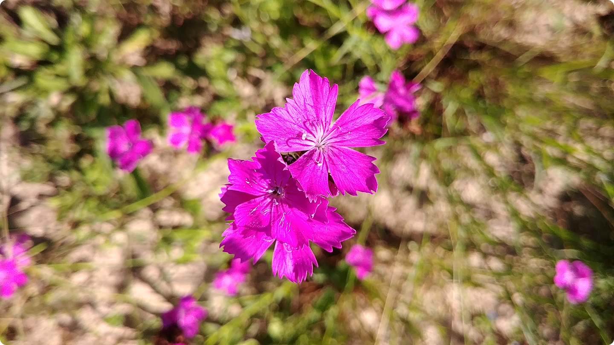

Création et entretien de jardins dans la région de Huy.
Taille, tonte, entretien, plantation, conception.
Expériences passées → Ecosem, Empreinte Nature, Entrepreneur de jardins Guillaume Massillon
Formations → Pas à Pas, IFAPME Entrepreneur et créateur d'espaces verts et autres formations continues.
Intérêts → Plantes indigènes, jardins nourrissiers, utilisation du métal & de la pierre, aménagements favorable à la biodiversité, conseil.
Contact → contact@raphlarri.com ou 0485/990.961

ps : Je suis aussi 🧑🏽💻